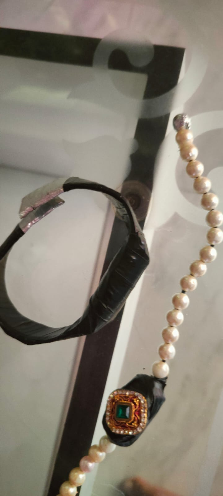

Developed an innovative safety solution combining a wearable bracelet and a smartphone app to enhance women's safety through Bluetooth connectivity. The app sends distress messages to emergency contacts when the connection between the smartphone and the wearable device is lost.
Bracelet Image

My Role
Designed the user interface using Flutter, ensuring an intuitive and seamless user experience.
Developed the hardware aspect, integrating Bluetooth technology into the wearable bracelet for real-time monitoring and emergency alert triggering.
Research Paper
This project is backed by thorough research and has been documented in a research paper. The paper discusses the technical aspects, challenges, and outcomes of the project.
The Women's Safety Bracelet is designed with the following hardware features:
Bluetooth Module: Used for real-time communication between the bracelet and the smartphone. It triggers alerts when the connection is lost.
Battery: A rechargeable battery powers the bracelet, ensuring it can be used for extended periods without frequent charging.
Microcontroller: The core of the bracelet's hardware, responsible for processing signals and managing the Bluetooth module.
Enclosure: A durable and lightweight enclosure protects the internal components, making the bracelet comfortable to wear and resistant to daily wear and tear.
These components work together to ensure that the user can trigger an emergency alert reliably whenever they are in danger.
Authors
Mohammad Shoaib Khan - Computer Science and Engineering, United Institute of Technology, Prayagraj, India
Siddhant Singh - Computer Science and Engineering, United Institute of Technology, Prayagraj, India
Ratnesh Verma - Computer Science and Engineering, United Institute of Technology, Prayagraj, India
Amit Kumar - Computer Science and Engineering, United Institute of Technology, Prayagraj, India
Abstract
This study introduces a safety app for women, focusing on using Bluetooth to enhance security. The app, designed for smartphones, connects with a Bluetooth device. If the connection is lost, it sends a distress message to the user’s parents immediately, ensuring prompt assistance. The research explains the app’s functionality, setup, and response in case of a problem. It emphasizes the importance of such apps for women’s safety, providing peace of mind and swift help in emergencies. The paper discusses potential improvements and the broader societal impact, highlighting technology’s crucial role in enhancing women’s safety and addressing safety concerns through innovation.
Features
Bluetooth Connectivity: Monitors the connection between the smartphone and a wearable device.
Distress Signal: Automatically sends a distress message if the Bluetooth connection is lost.
Location Tracking: Sends the user’s location to emergency contacts.
User Verification: Includes a 10-second alert for the user to verify their safety by entering a code.
Emergency Alerts: Notifies predefined emergency contacts if the user fails to verify their safety.
Future Enhancements
Integration of GPS tracking, voice recognition, and real-time audio/video streaming.
Development of advanced wearable devices with sensors to detect various safety threats.
Implementation of machine learning algorithms to analyze user behavior and predict potential safety risks.
Continuous refinement of the user interface for accessibility and ease of use.
Collaboration with local law enforcement and emergency services for quicker response times.
Global scalability with localization efforts to address regional safety concerns.
Enhanced privacy and security measures to protect user data.
Navigate to the project directory and follow the setup instructions in the documentation to configure the app on your smartphone and connect it to a Bluetooth device.
Usage
Launch the application on your smartphone. Pair the smartphone with the Bluetooth-enabled wearable device. Ensure the app runs in the background to monitor the Bluetooth connection. In case of a disconnection, follow the app’s prompts to verify your safety or let it notify your emergency contacts.
Safety Tips for Women
Be aware of your surroundings: Always be mindful of your environment and trust your instincts. If a situation feels uncomfortable or suspicious, leave immediately.
Carry a personal alarm: Consider carrying a personal alarm, such as a whistle or a small device that emits a loud noise, to deter potential attackers.
Stay connected: Keep your phone charged and with you at all times. Make sure your emergency contacts are up-to-date and easily accessible.
Travel safely: When traveling alone, research your destination beforehand and stay in well-lit, populated areas. Avoid walking alone at night.
Trust your instincts: If you feel uncomfortable or sense that something is off, trust your instincts and remove yourself from the situation.
Contact
For any questions or inquiries, please contact us at:
Mohammad Shoaib Khan: mohdshoaibkhan7211@example.com